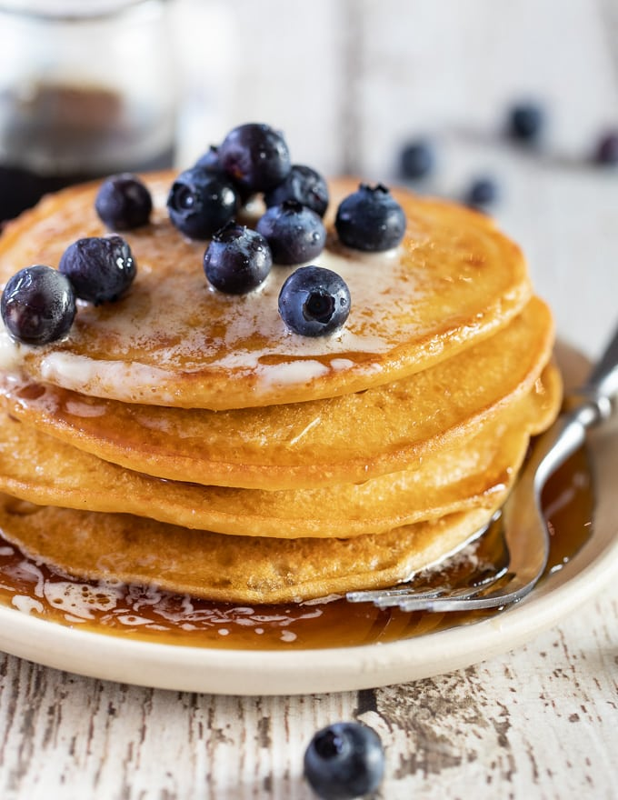

Fluffy Homemade Pancakes

Ingredients:
- 1 large egg (or 1 individual applesauce cup = ½ cup applesauce)
- 1 Tbsp honey
- 1 tsp vanilla extract
- 2 Tbsp oil of choice
- 1 cup gf all-purpose flour with xanthan gum
- 1 Tbsp baking powder
- ¼ tsp salt
- ¼ tsp salt
Instructions:
- Mix all ingredients together in a medium bowl.
- Spray griddle or skillet with cooking spray and heat on low heat (between 3 and 4 on my stove works well).
- Scoop batter with ¼ cup measuring cup and cook about 2-3 minutes until pancakes start to bubble and puff.
- Flip pancakes and cook for another 2 minutes until golden brown.